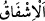

Şu alıp verdiğin nefes, senin emrinle değildir
Dünya malı biriktirince sakın sevinme
Cana güvenir sarılırsan, bil ki o can da senin değildir
Şeyh Sa‘dî (k.s.) da şöyle der:
Akıllı bir kimsenin nazarında dünyanın değeri bir çöptür
Çünkü o her zaman bir başkasına mekân olmuştur
Herkes ölür, ne ektiyse onu biçer
Arkasından ya iyi ad kalır ya da kötü bir nam
57. Rablerine olan saygıdan dolayı kötülükten sakınanlar;
“Rablerine olan saygıdan dolayı kötülükten sakınanlar” yâni onlar O’nun azâbının
korkusundan sakınırlar. “__WORD__ (haşyet)”, tâzim ile karışık bir korkudur. “__WORD__ ise
korku ile karışık bir endişe ve tasadır. Çünkü müşfik (sakınan) endişe ettiğini sever ve
onun başına bir şey gelmesinden korkar.
Hasan Basrî’nin şöyle dediği nakledilir: “Mü’min ihsan ve haşyet biriktirir (iyiliği
arttıkça haşyeti de artar), kâfir ise kötülük ve emniyet biriktirir (kötülüğü arttıkça güven
hissi de artar).”
Mesnevî’de şöyle der
Korkana güven verirler korkanın gönlünü yatıştırırlar
58. Rablerinin âyetlerine inananlar;
“Rablerinin” dış âlemde konulmuş ve mutlak olarak indirilmiş “âyetlerine
inananlar” onların delâlet ettiği şeyleri tasdîk edenler, sözle ve fiille onları
yalanlamayanlar;
59. Rablerine ortak tanımayanlar;
Açık ve gizli şirkle başkasını “Rablerine ortak tanımayanlar”